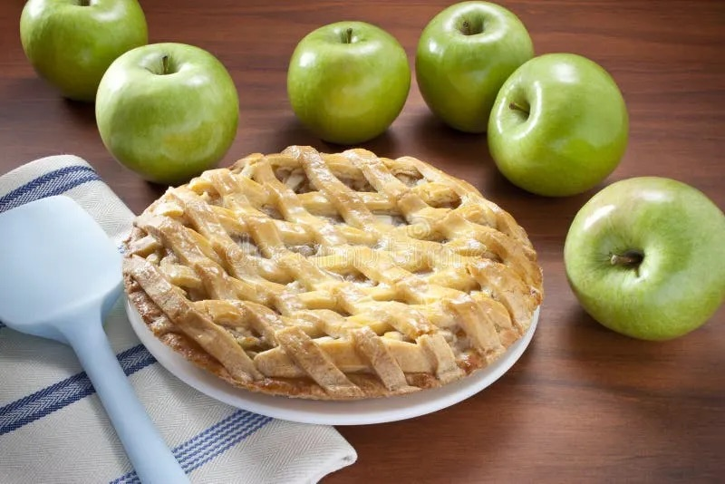

Go Back to Home Page
Pizza

Ingredients
- Pie Crust (2x 9")
- Apples (7 large Granny Smith apples)
- Granulated Sugar (1/2 cup)
- Light Brown Sugar (1/2 cup)
- Flour (2 tablespoons)
- Spices (1 teaspoon cinnamon, 1/8 teaspoon ground nutmeg)
- Lemon (1 tablespoon)
- Egg Wash (1 large egg lightly beaten in small bowl)
- Sanding Sugar (2 tablespoons, optional)
Steps
- Prepare the pie crust dough according to the recipe instructions, ensuring it chills for at least 1 hour before rolling out, or use store-bought crusts following package directions.
- Preheat the oven to 400°F (204°C) and place the oven rack in the center position.
- In a large bowl, combine the sliced apples, granulated sugar, light brown sugar, flour, cinnamon, nutmeg, lemon juice, and lemon zest. Toss to coat the apples evenly.
- Remove the chilled pie crust dough from the fridge and let it rest at room temperature for 5-10 minutes. On a lightly floured surface, roll one disc into a 12-inch circle that is 1/8-inch thick. Carefully lay this crust into the bottom of the pie plate.
- Spoon the apple filling over the bottom crust, discarding any excess juice that has collected at the bottom of the bowl. Roll out the second disc of pie crust until it is 1/8-inch thick and lay it over the apple filling.
- Trim the dough along the outside edge of the pie plate. Lift the edges where the two pie crusts meet, gently press to seal, and fold them under. Rotate the pie plate and repeat this process until the edges are neatly tucked under themselves. Cut 4 slits in the top of the dough to allow steam to vent.
- Place the pie on a baking sheet. Brush the surface of the pie crust with the egg wash and sprinkle with sanding sugar if using. Cover the edges with a pie shield or a strip of foil to prevent over-browning during the first 25 minutes.
- Bake at 400°F (204°C) for 25 minutes. Carefully remove the pie shield, turn the oven down to 375°F (190°C), and continue to bake for an additional 30-35 minutes, or until the top is golden brown and the juices are bubbly.
- Remove the pie from the oven and allow it to cool at room temperature for at least 3 hours before slicing to allow the filling to set.
Go Back to Home Page